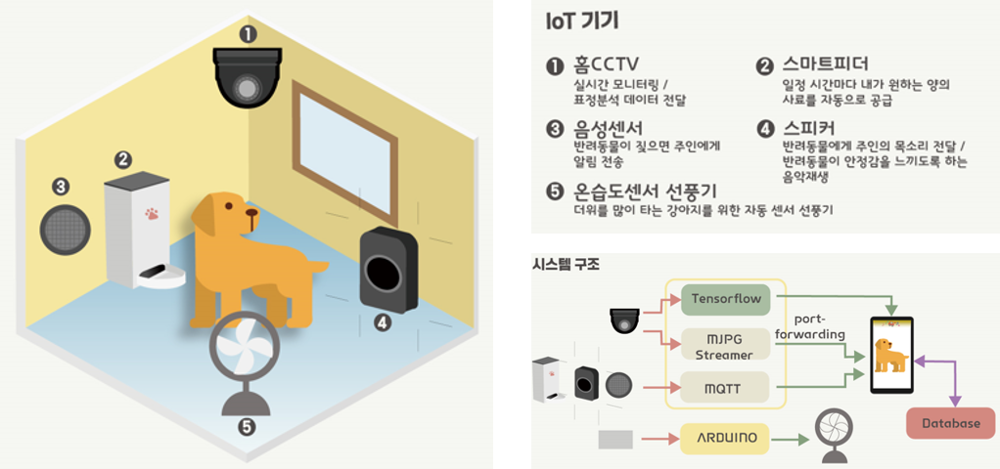
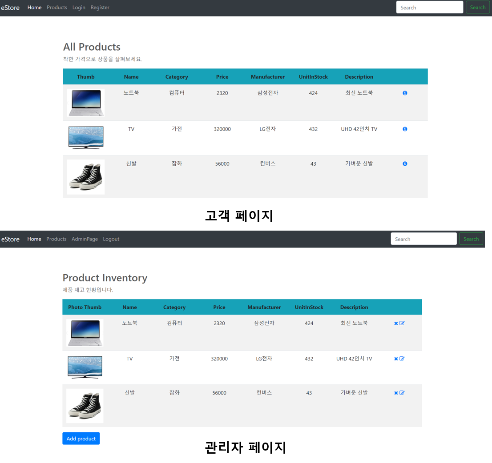

- 프로젝트 설명
웹 프레임워크 수업에서 팀 프로젝트(2명)로 한 스프링 프레임워크를 이용한 전자상거래 웹사이트입니다.
친구를 약속장소로 만나러 갈 때, 처음 가본 길이나 복잡한 길에서 지도를 보면서도 올바른 길을 찾지 못하고 헤매는 상황이 종종 있습니다. 이와 같은 상황을 해결하기 위해서 내 기준에서 보여주며 길 안내를 해주는 로드뷰를 통해 길을 원할하게 찾을 수 있도록 개발하였습니다. 또한 로드뷰 하단의 미니맵으로 주변의 음식점이나, 카페 등 300M 반경의 주변정보도 알 수 있으며, 자신의 현재위치도 지도를 통해 친구와 공유할 수 있습니다.
- 개발 기간 : 2018.10-2018.12
- 담당 분야 : Google Map Api, Place Api 사용하여 미니맵 구현, Firebase 사용하여 로그인, 회원가입 구현
- 개발 언어 : Java
- 사용 기술 : Google Map Api, Place Api, Directions Api, Firebase(Realtime database, Authentication)
반려견을 위한 IoT 서비스

- 프로젝트 설명
최근 반려견을 키우는 1인 가구가 증가하는 추세입니다. 하지만 1인 가구의 특성상 집을 비우는 시간이 많기 때문에 집 밖에서도 반려견을 케어할 수 있는 IOT서비스를 개발하였습니다.
주인은 라즈베리와 연동된 카메라를 통해 반려견의 상태를 실시간으로 체크하고 목소리를 들려줄 수 있으며,
시간을 맞춰 사료를 배식하고 반려견에게 안정감을 주는 노래를 들려줄 수 있습니다.
또한, 추위보다 더위를 많이 타는 반려견을 위해 설정해놓은 불쾌지수보다 초과될 시,
자동으로 작동되는 선풍기와 딥러닝을 사용해 반려견 표정을 분석하여 카메라로 확인하지 않고도
반려견의 현재 상태를 확인할 수 있습니다.
- 개발 기간 : 2019.03-2019.06
- 담당 분야 : MQTT 프로토콜을 통해 라즈베리파이와 안드로이드 기기 간의 데이터 통신, 딥러닝
- 개발 언어 : Java, Python
- 사용 기술 : Android, Deep learning(Keras), OpenCV
- 수상 내역 : 광운대학교 헤커톤대회 (장려상), 교내 캡스톤디자인 (혁신상), 교내 공학경진대회 (은상)
전자상거래 웹사이트(e-store)

- 프로젝트 설명
웹 프레임워크 수업에서 개인 프로젝트로 한 스프링 프레임워크를 이용한 전자상거래 웹사이트입니다.
고객은 회원가입, 로그인을 할 수 있으며 상품을 조회하고, 장바구니에 물건을 담아 물건을 구입할 수 있습니다.
관리자만 관리자 페이지에 접속할 수 있으며, 상품을 등록, 삭제, 수정할 수 있습니다.
- 개발 기간 : 2019.03-2019.06
- 개발 언어 : Java
- 사용 기술 : Spring Framework, Spring MVC, Spring Security, JPA, REST Api, MySQL, Bootstrap, CSS, HTML, JSP